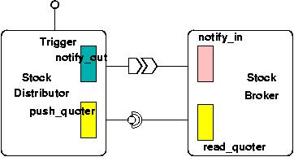
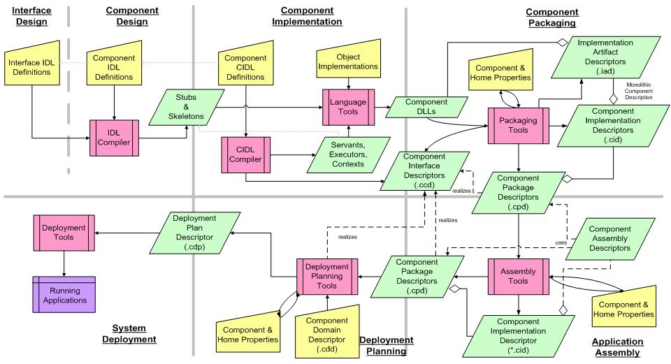

<!-- $Id$ -->
<html xmlns:v="urn:schemas-microsoft-com:vml" xmlns:o="urn:schemas-microsoft-com:office:office"
	xmlns:w="urn:schemas-microsoft-com:office:word" xmlns:p="urn:schemas-microsoft-com:office:powerpoint"
	xmlns:oa="urn:schemas-microsoft-com:office:activation" xmlns="http://www.w3.org/TR/REC-html40">
	<head>
		<title>Building a Stock Quoter with TAO - A Tutorial</title>
		<meta http-equiv="Content-Type" content="text/html; charset=us-ascii">
		<meta name="ProgId" content="Word.Document">
		<meta name="Generator" content="Microsoft Word 11">
		<meta name="Originator" content="Microsoft Word 11">
		<link rel="File-List" href="index_files/filelist.xml">
			<link rel="Edit-Time-Data" href="index_files/editdata.mso"> <!--[if !mso]>
<STYLE>
v\:* {behavior:url(#default#VML);}
o\:* {behavior:url(#default#VML);}
w\:* {behavior:url(#default#VML);}
.shape {behavior:url(#default#VML);}
</STYLE>
<![endif]-->  <!--[if gte mso 9]><xml>
 <o:DocumentProperties>
  <o:Author>Abdullah Sowayan</o:Author>
  <o:LastAuthor>Abdullah Sowayan</o:LastAuthor>
  <o:Revision>14</o:Revision>
  <o:TotalTime>65</o:TotalTime>
  <o:Created>2006-10-06T22:35:00Z</o:Created>
  <o:LastSaved>2007-03-08T01:23:00Z</o:LastSaved>
  <o:Pages>1</o:Pages>
  <o:Words>849</o:Words>
  <o:Characters>4845</o:Characters>
  <o:Company>Maritime Systems &amp; Sensors</o:Company>
  <o:Lines>40</o:Lines>
  <o:Paragraphs>11</o:Paragraphs>
  <o:CharactersWithSpaces>5683</o:CharactersWithSpaces>
  <o:Version>11.5606</o:Version>
 </o:DocumentProperties>
</xml><![endif]-->  <!--[if gte mso 9]><xml>
 <w:WordDocument>
  <w:ValidateAgainstSchemas/>
  <w:SaveIfXMLInvalid>false</w:SaveIfXMLInvalid>
  <w:IgnoreMixedContent>false</w:IgnoreMixedContent>
  <w:AlwaysShowPlaceholderText>false</w:AlwaysShowPlaceholderText>
  <w:BrowserLevel>MicrosoftInternetExplorer4</w:BrowserLevel>
 </w:WordDocument>
</xml><![endif]-->  <!--[if gte mso 9]><xml>
 <w:LatentStyles DefLockedState="false" LatentStyleCount="156">
 </w:LatentStyles>
</xml><![endif]-->
				<style> <!-- /* Style Definitions */ p.MsoNormal, li.MsoNormal, div.MsoNormal {mso-style-parent:""; margin:0in; margin-bottom:.0001pt; mso-pagination:widow-orphan; font-size:12.0pt; font-family:"Times New Roman"; mso-fareast-font-family:"Times New Roman";}
	h3 {mso-margin-top-alt:auto; margin-right:0in; mso-margin-bottom-alt:auto; margin-left:0in; mso-pagination:widow-orphan; mso-outline-level:3; font-size:13.5pt; font-family:"Times New Roman"; font-weight:bold;}
	a:link, span.MsoHyperlink {color:#000FFF; text-decoration:underline; text-underline:single;}
	a:visited, span.MsoHyperlinkFollowed {color:#FF0F0F; text-decoration:underline; text-underline:single;}
	p {mso-margin-top-alt:auto; margin-right:0in; mso-margin-bottom-alt:auto; margin-left:0in; mso-pagination:widow-orphan; font-size:12.0pt; font-family:"Times New Roman"; mso-fareast-font-family:"Times New Roman";}
	address {margin:0in; margin-bottom:.0001pt; mso-pagination:widow-orphan; font-size:12.0pt; font-family:"Times New Roman"; font-style:italic;}
	code {font-family:"Courier New"; mso-ascii-font-family:"Courier New"; mso-fareast-font-family:"Times New Roman"; mso-hansi-font-family:"Courier New"; mso-bidi-font-family:"Courier New";}
	span.intbody {mso-style-name:intbody;}
	@page Section1 {size:8.5in 11.0in; margin:1.0in 1.25in 1.0in 1.25in; mso-header-margin:.5in; mso-footer-margin:.5in; mso-paper-source:0;}
	div.Section1 {page:Section1;}
	/* List Definitions */ @list l0 {mso-list-id:137387275; mso-list-type:hybrid; mso-list-template-ids:-1837205732 67698689 67698691 67698693 67698689 67698691 67698693 67698689 67698691 67698693;}
	@list l0:level1 {mso-level-number-format:bullet; mso-level-text:\F0B7; mso-level-tab-stop:.75in; mso-level-number-position:left; margin-left:.75in; text-indent:-.25in; font-family:Symbol;}
	@list l0:level2 {mso-level-tab-stop:1.0in; mso-level-number-position:left; text-indent:-.25in;}
	@list l0:level3 {mso-level-tab-stop:1.5in; mso-level-number-position:left; text-indent:-.25in;}
	@list l0:level4 {mso-level-tab-stop:2.0in; mso-level-number-position:left; text-indent:-.25in;}
	@list l0:level5 {mso-level-tab-stop:2.5in; mso-level-number-position:left; text-indent:-.25in;}
	@list l0:level6 {mso-level-tab-stop:3.0in; mso-level-number-position:left; text-indent:-.25in;}
	@list l0:level7 {mso-level-tab-stop:3.5in; mso-level-number-position:left; text-indent:-.25in;}
	@list l0:level8 {mso-level-tab-stop:4.0in; mso-level-number-position:left; text-indent:-.25in;}
	@list l0:level9 {mso-level-tab-stop:4.5in; mso-level-number-position:left; text-indent:-.25in;}
	@list l1 {mso-list-id:271979655; mso-list-template-ids:-2025148996;}
	@list l1:level1 {mso-level-number-format:bullet; mso-level-text:\F0B7; mso-level-tab-stop:.75in; mso-level-number-position:left; margin-left:.75in; text-indent:-.25in; font-family:Symbol;}
	@list l1:level2 {mso-level-tab-stop:1.0in; mso-level-number-position:left; text-indent:-.25in;}
	@list l1:level3 {mso-level-tab-stop:1.5in; mso-level-number-position:left; text-indent:-.25in;}
	@list l1:level4 {mso-level-tab-stop:2.0in; mso-level-number-position:left; text-indent:-.25in;}
	@list l1:level5 {mso-level-tab-stop:2.5in; mso-level-number-position:left; text-indent:-.25in;}
	@list l1:level6 {mso-level-tab-stop:3.0in; mso-level-number-position:left; text-indent:-.25in;}
	@list l1:level7 {mso-level-tab-stop:3.5in; mso-level-number-position:left; text-indent:-.25in;}
	@list l1:level8 {mso-level-tab-stop:4.0in; mso-level-number-position:left; text-indent:-.25in;}
	@list l1:level9 {mso-level-tab-stop:4.5in; mso-level-number-position:left; text-indent:-.25in;}
	@list l2 {mso-list-id:398870737; mso-list-type:hybrid; mso-list-template-ids:-1758177826 -1301365556 67698713 67698715 67698703 67698713 67698715 67698703 67698713 67698715;}
	@list l2:level1 {mso-level-tab-stop:.5in; mso-level-number-position:left; text-indent:-.25in; mso-ansi-font-weight:bold;}
	@list l2:level2 {mso-level-number-format:alpha-lower; mso-level-tab-stop:1.0in; mso-level-number-position:left; text-indent:-.25in;}
	@list l2:level3 {mso-level-tab-stop:1.5in; mso-level-number-position:left; text-indent:-.25in;}
	@list l2:level4 {mso-level-tab-stop:2.0in; mso-level-number-position:left; text-indent:-.25in;}
	@list l2:level5 {mso-level-tab-stop:2.5in; mso-level-number-position:left; text-indent:-.25in;}
	@list l2:level6 {mso-level-tab-stop:3.0in; mso-level-number-position:left; text-indent:-.25in;}
	@list l2:level7 {mso-level-tab-stop:3.5in; mso-level-number-position:left; text-indent:-.25in;}
	@list l2:level8 {mso-level-tab-stop:4.0in; mso-level-number-position:left; text-indent:-.25in;}
	@list l2:level9 {mso-level-tab-stop:4.5in; mso-level-number-position:left; text-indent:-.25in;}
	@list l3 {mso-list-id:1284144513; mso-list-type:hybrid; mso-list-template-ids:120510300 -1301365556 67698713 67698715 67698703 67698713 67698715 67698703 67698713 67698715;}
	@list l3:level1 {mso-level-tab-stop:.5in; mso-level-number-position:left; text-indent:-.25in; mso-ansi-font-weight:bold;}
	@list l3:level2 {mso-level-tab-stop:1.0in; mso-level-number-position:left; text-indent:-.25in;}
	@list l3:level3 {mso-level-tab-stop:1.5in; mso-level-number-position:left; text-indent:-.25in;}
	@list l3:level4 {mso-level-tab-stop:2.0in; mso-level-number-position:left; text-indent:-.25in;}
	@list l3:level5 {mso-level-tab-stop:2.5in; mso-level-number-position:left; text-indent:-.25in;}
	@list l3:level6 {mso-level-tab-stop:3.0in; mso-level-number-position:left; text-indent:-.25in;}
	@list l3:level7 {mso-level-tab-stop:3.5in; mso-level-number-position:left; text-indent:-.25in;}
	@list l3:level8 {mso-level-tab-stop:4.0in; mso-level-number-position:left; text-indent:-.25in;}
	@list l3:level9 {mso-level-tab-stop:4.5in; mso-level-number-position:left; text-indent:-.25in;}
	@list l4 {mso-list-id:1734621206; mso-list-type:hybrid; mso-list-template-ids:-1370594096 67698689 67698691 67698693 67698689 67698691 67698693 67698689 67698691 67698693;}
	@list l4:level1 {mso-level-number-format:bullet; mso-level-text:\F0B7; mso-level-tab-stop:.75in; mso-level-number-position:left; margin-left:.75in; text-indent:-.25in; font-family:Symbol;}
	@list l4:level2 {mso-level-tab-stop:1.0in; mso-level-number-position:left; text-indent:-.25in;}
	@list l4:level3 {mso-level-tab-stop:1.5in; mso-level-number-position:left; text-indent:-.25in;}
	@list l4:level4 {mso-level-tab-stop:2.0in; mso-level-number-position:left; text-indent:-.25in;}
	@list l4:level5 {mso-level-tab-stop:2.5in; mso-level-number-position:left; text-indent:-.25in;}
	@list l4:level6 {mso-level-tab-stop:3.0in; mso-level-number-position:left; text-indent:-.25in;}
	@list l4:level7 {mso-level-tab-stop:3.5in; mso-level-number-position:left; text-indent:-.25in;}
	@list l4:level8 {mso-level-tab-stop:4.0in; mso-level-number-position:left; text-indent:-.25in;}
	@list l4:level9 {mso-level-tab-stop:4.5in; mso-level-number-position:left; text-indent:-.25in;}
	ol {margin-bottom:0in;}
	ul {margin-bottom:0in;}
	--></style>
		<!--[if gte mso 10]>
<style>
 /* Style Definitions */
 table.MsoNormalTable
	{mso-style-name:"Table Normal";
	mso-tstyle-rowband-size:0;
	mso-tstyle-colband-size:0;
	mso-style-noshow:yes;
	mso-style-parent:"";
	mso-padding-alt:0in 5.4pt 0in 5.4pt;
	mso-para-margin:0in;
	mso-para-margin-bottom:.0001pt;
	mso-pagination:widow-orphan;
	font-size:10.0pt;
	font-family:"Times New Roman";
	mso-ansi-language:#0400;
	mso-fareast-language:#0400;
	mso-bidi-language:#0400;}
</style>
<![endif]-->  <!-- index.html,v 1.3 2006/05/06 02:29:31 schmidt Exp --> <!--[if gte mso 9]><xml>
 <o:shapedefaults v:ext="edit" spidmax="8194"/>
</xml><![endif]-->  <!--[if gte mso 9]><xml>
 <o:shapelayout v:ext="edit">
  <o:idmap v:ext="edit" data="1"/>
 </o:shapelayout></xml><![endif]-->
	</head>
	<body bgcolor="white" lang="EN-US" link="#000fff" vlink="#ff0f0f" style='tab-interval:
.5in'>
		<h3 align="center" style='MARGIN:0in 0in 0pt;LINE-HEIGHT:150%;TEXT-ALIGN:center' class="Section1"><span style='COLOR:black'>Building a Stock Quoter with CIAO,
CoSMIC, and DAnCE - A Tutorial<o:p></o:p></span></h3>
		<h3 align="center" style='MARGIN:0in 0in 0pt;LINE-HEIGHT:150%;TEXT-ALIGN:center' class="Section1"><span style='COLOR:black'><o:p>&nbsp;</o:p>
			</span></h3>
		<p style='MARGIN:0in 0in 0pt;LINE-HEIGHT:150%' class="Section1"><span style='COLOR:black'>This tutorial provides a step-by-step lesson on developing
component-based distributed applications using <a href="http://www.dre.vanderbilt.edu/cosmic/">CoSMIC</a> modeling toolkit and the
<a href="http://www.cs.wustl.edu/%7Eschmidt/CIAO.html">CIAO DAnCE</a>
framework. The example application used in this tutorial is a Stock Quoter that
consists of two components; the <i>StockDistributor</i> and the <i>StockBroker</i>.
The <i>StockDistributor</i> notifies one or more stock brokers whenever a stock
price changes. Upon receiving the notification, the <i>StockBroker</i> fetches
information about a particular stock from the <i>StockDistributor</i>. The
figure bellow shows the application diagram. This Stock Quoter application is
based on a series of <a href="http://www.cs.wustl.edu/%7Eschmidt/report-doc.html">CORBA component 
					model</a>
columns written by <a href="http://www.cs.wustl.edu/%7Eschmidt/">Doug Schmidt</a>
and <a href="http://www.iona.com/hyplan/vinoski/">Steve Vinoski</a> for <a href="http://www.cuj.com">C/C++ 
					Users Journal</a> and has consistently been
used as an example for <a href="http://www.cs.wustl.edu/%7Eschmidt/TAO.html">TAO</a>.<o:p></o:p></span></p>
		<p style='MARGIN:0in 0in 0pt;LINE-HEIGHT:150%' class="Section1"><span style='COLOR:black'><o:p>&nbsp;</o:p>
			</span></p>
		<p class="MsoNormal" align="center" style='LINE-HEIGHT:150%;TEXT-ALIGN:center'><span style='COLOR:black'><br>
Stock Quoter application Diagram <o:p></o:p></span></p>
		<p class="MsoNormal" style='LINE-HEIGHT:150%'><span style='COLOR:black'><o:p>&nbsp;</o:p>
			</span></p>
		<p style='MARGIN:0in 0in 0pt;LINE-HEIGHT:150%' class="Section1"><span style='COLOR:black'>This is a step-by-step tutorial that will walk you through
the development and deployment phases of a CCM application (Stock Quoter). This
tutorial assumes that you have read and understood the following articles that
describe the example:<o:p></o:p></span></p>
		<p style='MARGIN:0in 0in 0pt 0.75in;TEXT-INDENT:-0.25in;LINE-HEIGHT:150%;mso-list:l0 level1 lfo1;tab-stops:list .75in'
			class="Section1"><![if !supportLists]><span style='FONT-FAMILY:Symbol;
mso-fareast-font-family:Symbol;
mso-bidi-font-family:Symbol'><span style='mso-list:Ignore'>&middot;<span style="FONT:7pt 'Times New Roman'">&nbsp;&nbsp;&nbsp;&nbsp;&nbsp;&nbsp;
</span></span>
			</span><![endif]><a href="http://www.cuj.com/documents/s=9039/cujexp0402vinoski/">The 
				CORBA Component Model, Part 1: Evolving Towards Component Middleware</a></p>
		<p style='MARGIN:0in 0in 0pt 0.75in;TEXT-INDENT:-0.25in;LINE-HEIGHT:150%;mso-list:l0 level1 lfo1;tab-stops:list .75in'
			class="Section1"><![if !supportLists]><span style='FONT-FAMILY:Symbol;
mso-fareast-font-family:Symbol;
mso-bidi-font-family:Symbol'><span style='mso-list:Ignore'>&middot;<span style="FONT:7pt 'Times New Roman'">&nbsp;&nbsp;&nbsp;&nbsp;&nbsp;&nbsp;
</span></span>
			</span><![endif]><a href="http://www.cuj.com/documents/s=9152/cujexp0404vinoski/">The 
				CORBA Component Model, Part 2: Defining Components with the IDL 3.x Types</a></p>
		<p style='MARGIN:0in 0in 0pt 0.75in;TEXT-INDENT:-0.25in;LINE-HEIGHT:150%;mso-list:l0 level1 lfo1;tab-stops:list .75in'
			class="Section1"><![if !supportLists]><span style='FONT-FAMILY:Symbol;
mso-fareast-font-family:Symbol;
mso-bidi-font-family:Symbol'><span style='mso-list:Ignore'>&middot;<span style="FONT:7pt 'Times New Roman'">&nbsp;&nbsp;&nbsp;&nbsp;&nbsp;&nbsp;
</span></span>
			</span><![endif]><a href="http://www.cuj.com/documents/s=9301/cujexp0409vinoski/">The 
				CORBA Component Model, Part 3: The CCM Container Architecture and Component 
				Implementation Framework</a></p>
		<p style='MARGIN:0in 0in 0pt 0.75in;TEXT-INDENT:-0.25in;LINE-HEIGHT:150%;mso-list:l0 level1 lfo1;tab-stops:list .75in'
			class="Section1"><![if !supportLists]><span style='FONT-FAMILY:Symbol;
mso-fareast-font-family:Symbol;
mso-bidi-font-family:Symbol'><span style='mso-list:Ignore'>&middot;<span style="FONT:7pt 'Times New Roman'">&nbsp;&nbsp;&nbsp;&nbsp;&nbsp;&nbsp;
</span></span>
			</span><![endif]><a href="http://www.cuj.com/documents/s=9360/cujexp0410vinoski/">The 
				CORBA Component Model Part 4: The CORBA Component Model Part 4: Implementing 
				Components with CCM</a></p>
		<p style='MARGIN:0in 0in 0pt;LINE-HEIGHT:150%' class="Section1"><span style='COLOR:black'><o:p>&nbsp;</o:p>
			</span></p>
		<p style='MARGIN:0in 0in 0pt;LINE-HEIGHT:150%' class="Section1"><span style='COLOR:black'><span style='mso-spacerun:yes'>&nbsp;</span>In addition to
the articles above, reading and understanding the resources below will greatly
help you follow through this tutorial:<o:p></o:p></span></p>
		<p style='MARGIN:0in 0in 0pt 0.75in;TEXT-INDENT:-0.25in;LINE-HEIGHT:150%;mso-list:l4 level1 lfo2;tab-stops:list .75in'
			class="Section1"><![if !supportLists]><span style='COLOR:black;
FONT-FAMILY:Symbol;
mso-fareast-font-family:Symbol;
mso-bidi-font-family:Symbol'><span style='mso-list:Ignore'>&middot;<span style="FONT:7pt 'Times New Roman'">&nbsp;&nbsp;&nbsp;&nbsp;&nbsp;&nbsp;
</span></span>
			</span><![endif]><a href="http://www.cs.wustl.edu/~schmidt/PDF/DAnCE.pdf">DAnCE: A 
				QoS-enabled Component Deployment and Conguration Engine</a><span style='COLOR:black'><o:p></o:p>
			</span></p>
		<p style='MARGIN:0in 0in 0pt 0.75in;TEXT-INDENT:-0.25in;LINE-HEIGHT:150%;mso-list:l4 level1 lfo2;tab-stops:list .75in'
			class="Section1"><![if !supportLists]><span style='FONT-FAMILY:Symbol;
mso-fareast-font-family:Symbol;
mso-bidi-font-family:Symbol'><span style='mso-list:Ignore'>&middot;<span style="FONT:7pt 'Times New Roman'">&nbsp;&nbsp;&nbsp;&nbsp;&nbsp;&nbsp;
</span></span>
			</span><![endif]>TAO&#8217;s Developer&#8217;s Guide Version 1.4a. Chapter 
			32&nbsp;: CIAO and CCM.</p>
		<p style='MARGIN:0in 0in 0pt;LINE-HEIGHT:150%' class="Section1"><span style='COLOR:black'><o:p>&nbsp;</o:p>
			</span></p>
		<p class="MsoNormal" style='LINE-HEIGHT:150%'><b><span style='FONT-SIZE:14pt;
COLOR:black;
LINE-HEIGHT:150%'>Prerequisites:</span></b><b><span style='FONT-SIZE:13.5pt;COLOR:black;LINE-HEIGHT:150%'><br>
				</span></b><span style='COLOR:black'>&nbsp;Before you start, you need the
following: <o:p></o:p></span></p>
		<p class="MsoNormal" style='MARGIN-LEFT:0.75in;TEXT-INDENT:-0.25in;LINE-HEIGHT:150%;mso-list:l1 level1 lfo3;tab-stops:list .75in'><![if 
			!supportLists]><span style='COLOR:black;FONT-FAMILY:Symbol;mso-fareast-font-family:Symbol;mso-bidi-font-family:Symbol'><span style='mso-list:Ignore'>&middot;<span style="FONT:7pt 'Times New Roman'">&nbsp;&nbsp;&nbsp;&nbsp;&nbsp;&nbsp; </span></span>
			</span><![endif]><b><span style='COLOR:black'>ACE+TAO+CIAO (Component Integraated ACE ORB).</span></b><span style='COLOR:black'> ACE + TAO + CIAO provide the CCM infrastructure necessary
to enable the CCM-based distributed component interaction. You can click <a href="http://download.dre.vanderbilt.edu">here</a> to download the latest ACE +
TAO + CIAO and click <a href="http://www.cs.wustl.edu/%7Eschmidt/ACE_wrappers/TAO/CIAO/CIAO-INSTALL.html">here</a>
for information on how to build ACE+TAO+CIAO.<o:p></o:p></span></p>
		<p class="MsoNormal" style='MARGIN-LEFT:0.75in;TEXT-INDENT:-0.25in;LINE-HEIGHT:150%;mso-list:l1 level1 lfo3;tab-stops:list .75in'><![if 
			!supportLists]><span style='COLOR:black;FONT-FAMILY:Symbol;mso-fareast-font-family:Symbol;mso-bidi-font-family:Symbol'><span style='mso-list:Ignore'>&middot;<span style="FONT:7pt 'Times New Roman'">&nbsp;&nbsp;&nbsp;&nbsp;&nbsp;&nbsp; </span></span>
			</span><![endif]><b><span style='COLOR:black'>Generic Modeling Environment (GME).</span></b><span style='COLOR:black'> GME is a configurable toolkit for creating domain-specific
modeling and program synthesis environments. It provides the execution
environment for CoSMIC toolkits. Click <a href="http://www.isis.vanderbilt.edu/Projects/gme/download.html">here</a> to
download GME.<o:p></o:p></span></p>
		<p class="MsoNormal" style='MARGIN-LEFT:0.75in;TEXT-INDENT:-0.25in;LINE-HEIGHT:150%;mso-list:l1 level1 lfo3;tab-stops:list .75in'><![if 
			!supportLists]><span style='COLOR:black;FONT-FAMILY:Symbol;mso-fareast-font-family:Symbol;mso-bidi-font-family:Symbol'><span style='mso-list:Ignore'>&middot;<span style="FONT:7pt 'Times New Roman'">&nbsp;&nbsp;&nbsp;&nbsp;&nbsp;&nbsp; </span></span>
			</span><![endif]><b><span style='COLOR:black'>CoSMIC toolkit.</span></b><span style='COLOR:black'> Click <a href="http://www.dre.vanderbilt.edu/cosmic/">here</a> to download the latest
CoSMIC release.<o:p></o:p></span></p>
		<blockquote style='MARGIN-TOP:5pt;MARGIN-BOTTOM:5pt' class="Section1">
			<div style='MARGIN-LEFT:-0.5in'>
				<div class="MsoNormal" align="center" style='LINE-HEIGHT:150%;TEXT-ALIGN:center'><span style='COLOR:black'>
						<hr size="2" width="100%" align="center">
					</span></div>
			</div>
			<p class="MsoNormal" style='MARGIN-LEFT:-0.5in;LINE-HEIGHT:150%'><strong><span style='COLOR:black'>Note:</span></strong><strong><span style='FONT-WEIGHT:normal'><o:p></o:p>
					</span></strong></p>
			<p class="MsoNormal" style='MARGIN-LEFT:0in;TEXT-INDENT:-0.25in;LINE-HEIGHT:150%;mso-list:l3 level1 lfo4;tab-stops:list 0in .5in'><![if 
				!supportLists]><b style='mso-bidi-font-weight:normal'><span style='mso-list:Ignore'>1.<span style="FONT:7pt 'Times New Roman'">&nbsp;&nbsp;&nbsp;&nbsp; </span></span></b><![endif]><span style='COLOR:black'>Usually you should download the latest GME, but it is possible
that CoSMIC hasn't been updated yet to support the very latest GME..The
installation process of CoSMIC will tell you which version it is
expecting.&nbsp; So <span class="intbody">please make sure the GME version you
are using is the version required by CoSMIC. A different version of </span>GME
may result in undefined errors. </span></p>
			<p class="MsoNormal" style='MARGIN-LEFT:0in;TEXT-INDENT:-0.25in;LINE-HEIGHT:150%;mso-list:l3 level1 lfo4;tab-stops:list 0in .5in'><![if 
				!supportLists]><b style='mso-bidi-font-weight:normal'><span style='COLOR:black'><span style='mso-list:Ignore'>2.<span style="FONT:7pt 'Times New Roman'">&nbsp;&nbsp;&nbsp;&nbsp;
</span></span>
					</span></b><![endif]><span style='COLOR:black'>Make sure you
install GME first before you start with CoSMIC toolkits.<o:p></o:p></span></p>
			<div style='MARGIN-LEFT:-0.5in'>
				<div class="MsoNormal" align="center" style='LINE-HEIGHT:150%;TEXT-ALIGN:center'><span style='COLOR:black'>
						<hr size="2" width="100%" align="center">
					</span></div>
			</div>
		</blockquote>
		<p class="MsoNormal" style='LINE-HEIGHT:150%'><span style='COLOR:black'><o:p>&nbsp;</o:p>
			</span></p>
		<p class="MsoNormal" style='LINE-HEIGHT:150%'><b style='mso-bidi-font-weight:
normal'><span style='FONT-SIZE:14pt;COLOR:black;LINE-HEIGHT:150%'>Steps for
Developing the Stock Quoter Application:<o:p></o:p></span></b></p>
		<p class="MsoNormal" style='LINE-HEIGHT:150%'><b style='mso-bidi-font-weight:
normal'><span style='FONT-SIZE:14pt;COLOR:black;LINE-HEIGHT:150%'><o:p>&nbsp;</o:p>
				</span></b></p>
		<p class="MsoNormal" align="center" style='LINE-HEIGHT:150%;TEXT-ALIGN:center'><b style='mso-bidi-font-weight:normal'><span style='FONT-SIZE:14pt;COLOR:black;LINE-HEIGHT:150%'><o:p></o:p>
				</span></b></p>
		<p class="MsoNormal" align="center" style='LINE-HEIGHT:150%;TEXT-ALIGN:center'><span style='COLOR:black'>Steps for Developing Stock Quoter Application<o:p></o:p></span></p>
		<p class="MsoNormal" style='LINE-HEIGHT:150%'><span style='COLOR:black'><o:p>&nbsp;</o:p>
			</span></p>
		<p class="MsoNormal" style='LINE-HEIGHT:150%'><span style='COLOR:black'>Listed
below are the steps for developing the Stock Quoter application. Each link is a
step-by-step tutorial of the specific step.</span><b style='mso-bidi-font-weight:
normal'><span style='FONT-SIZE:14pt;COLOR:black;LINE-HEIGHT:150%'><o:p></o:p>
				</span></b></p>
		<DIV class="Section1">
			<OL style="MARGIN-TOP: 0in" type="1" start="1">
				<li class="MsoNormal" style='COLOR:black;LINE-HEIGHT:150%;mso-list:l2 level1 lfo5;tab-stops:list .5in'>
					<b><a href="01.html">Define your interfaces and component types</a>:</b><o:p></o:p>
			<ol style='MARGIN-TOP:0in' start="1" type="a">
				<li class="MsoNormal" style='COLOR:black;LINE-HEIGHT:150%;mso-list:l2 level2 lfo5;tab-stops:list 1.0in'>
					<b>Define your interfaces using IDL 2.x features</b>, e.g., use the familiar 
					CORBA types (such as
					<span style='mso-bidi-font-weight:
      bold'>struct</span>,
					<span style='mso-bidi-font-weight:bold'>sequence</span>,
					<span style='mso-bidi-font-weight:bold'>long</span>,
					<span style='mso-bidi-font-weight:bold'>Object</span>,
					<span style='mso-bidi-font-weight:
      bold'>interface</span>,
					<span style='mso-bidi-font-weight:bold'>raises</span>, etc.) to define your 
					interfaces &amp; exceptions.<o:p></o:p>
				<li class="MsoNormal" style='COLOR:black;LINE-HEIGHT:150%;mso-list:l2 level2 lfo5;tab-stops:list 1.0in'>
					<b>Define your component types using IDL 3.x features</b>, e.g., use the new 
					CCM keywords (such as
					<span style='mso-bidi-font-weight:bold'>component</span>,
					<span style='mso-bidi-font-weight:bold'>provides</span>,
					<span style='mso-bidi-font-weight:bold'>uses</span>,
					<span style='mso-bidi-font-weight:
      bold'>publishes</span>,
					<span style='mso-bidi-font-weight:bold'>emits</span>, &amp;
					<span style='mso-bidi-font-weight:bold'>consumes</span>) to group the IDL 2.x 
					types together to form components.<b><o:p></o:p></b></li>
			</ol>
			<li class="MsoNormal" style='COLOR:black;LINE-HEIGHT:150%;mso-list:l2 level1 lfo5;tab-stops:list .5in'>
				<b><a href="02.html">Implement your components</a></b>, e.g., using C++ or Java 
				&amp; the Component Implementation Definition Language (CIDL), which generates 
				component servants, executor interfaces, associated metadata, &amp; 
				compositions.<b><o:p></o:p></b>
			<li class="MsoNormal" style='COLOR:black;LINE-HEIGHT:150%;mso-list:l2 level1 lfo5;tab-stops:list .5in'>
				<b style='mso-bidi-font-weight:normal'><a href="03.html">Package your components</a></b>,
				<span style='COLOR:red'>
					<FONT color="#000000">Bundle component implementations with metadata giving their 
						default properties and their component descriptors into component packages. </FONT>
				</span>
			<LI class="MsoNormal" style="COLOR: black; LINE-HEIGHT: 150%; mso-list: l2 level1 lfo5; tab-stops: list .5in">
				<b><a href="03.html">Assemble your components</a></b>, e.g., group related 
				components together &amp; characterize their metadata that describes the 
				components present in the assembly.<span style='mso-bidi-font-weight:bold'><o:p></o:p>
				</span>
			<LI class="MsoNormal" style="COLOR: black; LINE-HEIGHT: 150%; mso-list: l2 level1 lfo5; tab-stops: list .5in">
				<b style='mso-bidi-font-weight:normal'><a href="03.html">Plan your deployment</a></b>, 
			analyze the runtime resource requirements of assembly descriptors and prepare 
			and deploy required resources where component assemblies can be realized.
			<LI class="MsoNormal" style="COLOR: black; LINE-HEIGHT: 150%; mso-list: l2 level1 lfo5; tab-stops: list .5in">
				<b><a href="04.html">Deploy your components &amp; run your application</a></b>, 
				e.g., move the component assembly packages to the appropriate nodes in the 
				distributed system &amp; invoke operations on components to perform the 
				application logic.<b style='mso-bidi-font-weight:
     normal'><o:p></o:p></b>
			</LI>
			</OL></DIV>
		<div class="MsoNormal" align="center" style='LINE-HEIGHT:150%;TEXT-ALIGN:center'><span style='COLOR:black'>
				<hr size="2" width="100%" align="center">
			</span></div>
		<address style='LINE-HEIGHT:150%'><a href="mailto:ming.xiong@vanderbilt.edu">Ming Xiong<br>
			</a><a href="mailto:abdullah.sowayan@lmco.com">Abdullah Sowayan</a></address>
		<ADDRESS style="LINE-HEIGHT: 150%">&nbsp;</ADDRESS>
		<ADDRESS style="LINE-HEIGHT: 150%">$Id$</ADDRESS>
	</body>
</html>
